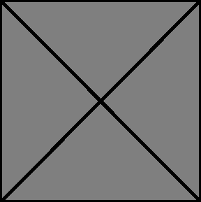
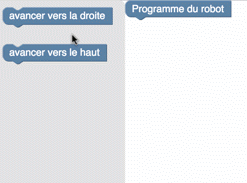
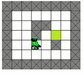
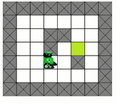
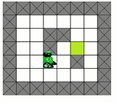

Exercice démo
   

Programmer le robot pour qu'il atteigne la case verte en évitant les obstacles.
Pour cela, glissez des blocs depuis la zone de gauche pour former une séquence d'instructions attachée au bloc « Programme du robot ».
Le programme Python à écrire est :
from robot import *
droite()
haut()
droite()
Cliquez ensuite sur le bouton « Valider le programme ».
L'animation suivante vous montre ces étapes :